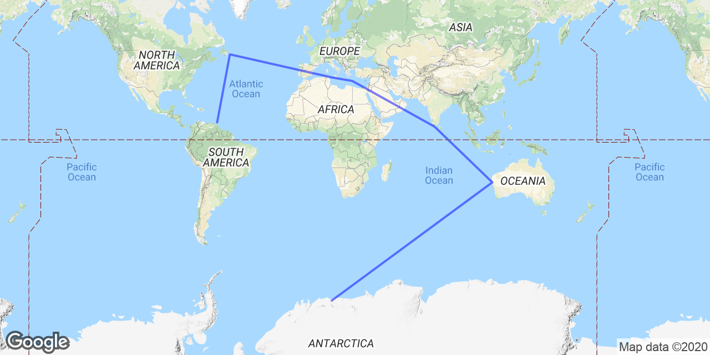
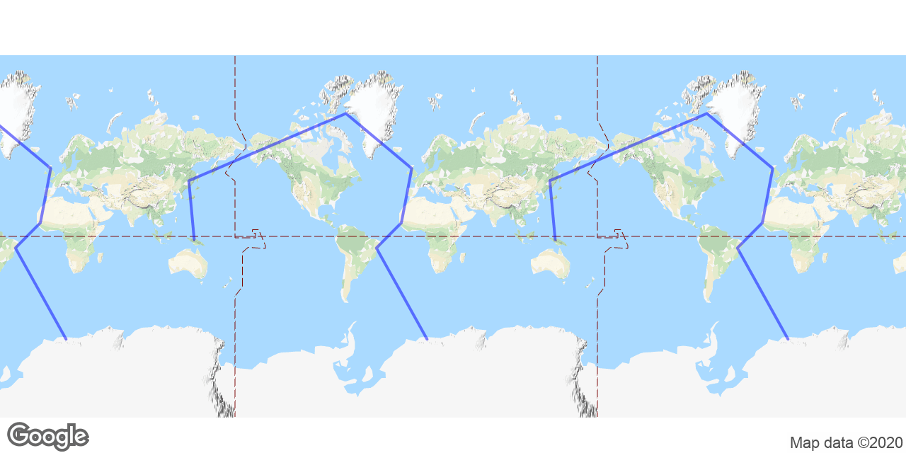
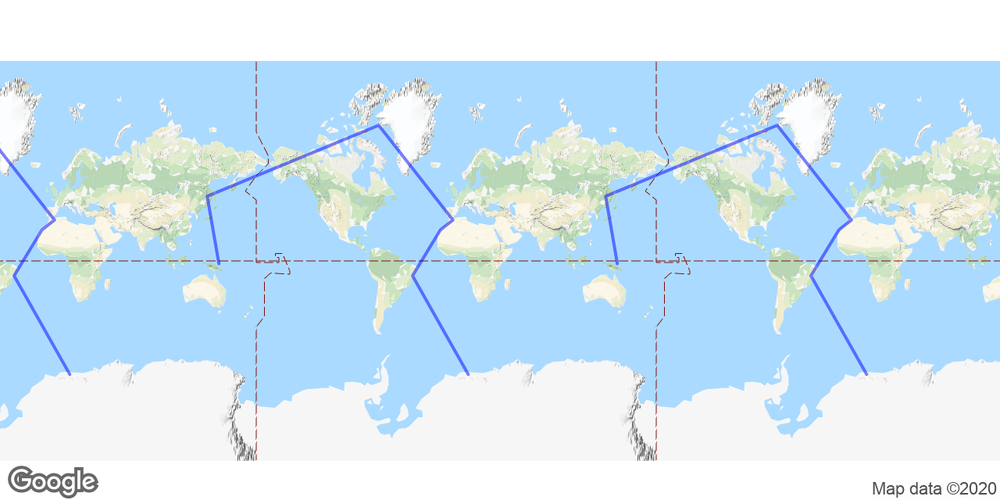
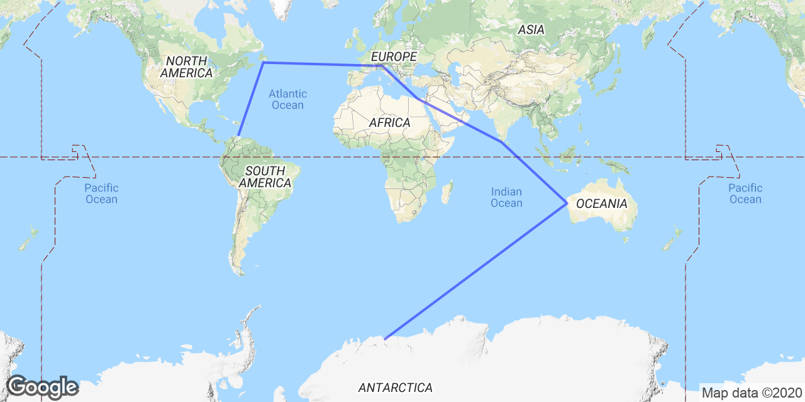
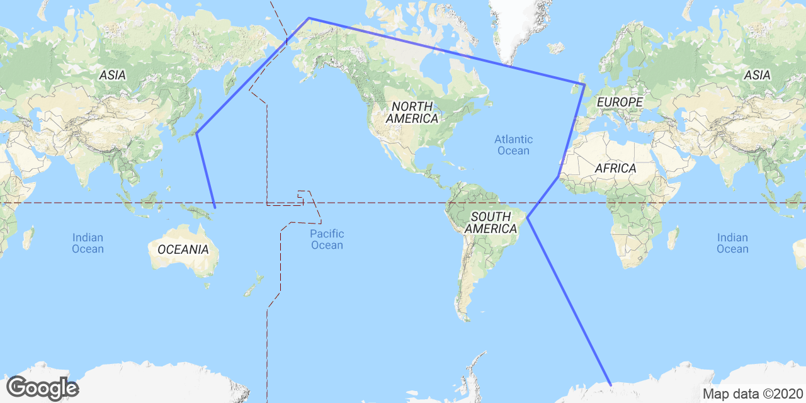
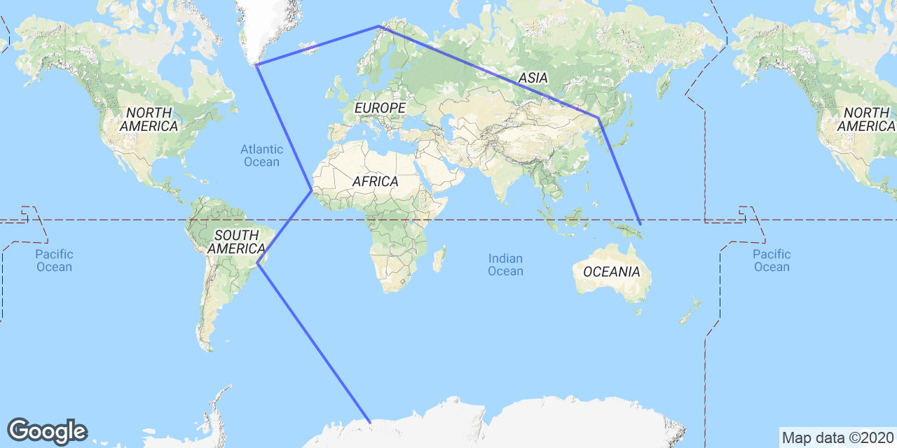
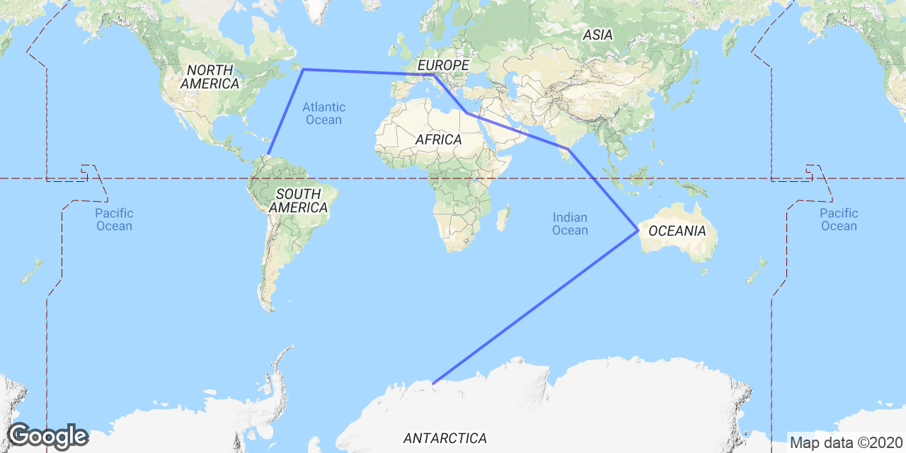
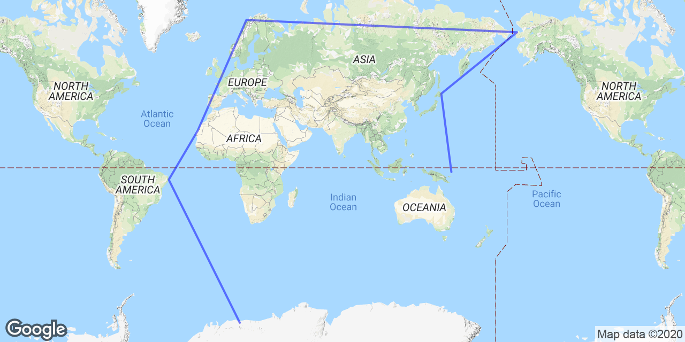
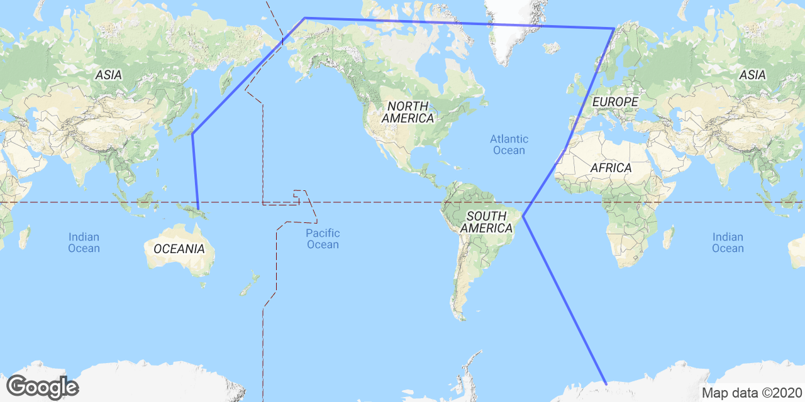

Summary
Report generated at Mon Oct 7 14:05:44 2019Using args: google_api_key: [redacted] optimization_radius_mi: 200 jet_stream_correction_mph: 50 num_best_routes: 20 start_from_airport_ids: [500000] data_path: data/ geo_hash_shuffles: 100 html_file: report.html routing_overhead_pct: 10 start_from_continent_codes: ['AN'] max_searches: 250000000 geo_hash_resolution_deg: 5.0 disable_jet_stream_correction: False disable_optimization: False optimization_max_searches: 250000 disable_geo_overrides: False
Completed in 5996.48s
Searched 250000000 possible routes
Searched 882085 additional routes for optimizations
Found 3661 valid routes given mission constraints
Showing top 20
Route #1

AT17 AN RU (0 mi / 0.0 hrs / 0 mph)
name: Novolazarevskaya Station country: n/a elevation: 335ft type: small_airport plane: n/a nearest alternate medium_airport: None nearest alternate large_airport: None SBPS SA BR (4728 mi / 9.1 hrs / 520 mph)
name: Porto Seguro Airport country: Brazil elevation: 168ft type: medium_airport plane: g550 nearest alternate medium_airport: SBQV, 160.97 mi Vitória da Conquista Airport, BR nearest alternate large_airport: SBCT, 903.95 mi Afonso Pena Airport, BR GCFV EU ES (3883 mi / 7.1 hrs / 549 mph)
name: Fuerteventura Airport country: Spain elevation: 85ft type: medium_airport plane: g450 nearest alternate medium_airport: GMMA, 178.72 mi Smara Airport, EH nearest alternate large_airport: GCLP, 99.47 mi Gran Canaria Airport, ES BGBW NA GL (2953 mi / 5.9 hrs / 496 mph)
name: Narsarsuaq Airport country: Greenland elevation: 112ft type: medium_airport plane: g450 nearest alternate medium_airport: BGSF, 434.31 mi Kangerlussuaq Airport, GL nearest alternate large_airport: None ENNA EU NO (2167 mi / 3.8 hrs / 573 mph)
name: Banak Airport country: Norway elevation: 25ft type: medium_airport plane: g450 nearest alternate medium_airport: EFKT, 163.63 mi Kittilä Airport, FI nearest alternate large_airport: ENBO, 328.68 mi Bodø Airport, NO ZBTJ AS CN (4134 mi / 7.2 hrs / 570 mph)
name: Tianjin Binhai International Airport country: China elevation: 10ft type: large_airport plane: g450 AYVN OC PG (3593 mi / 6.5 hrs / 549 mph)
name: Vanimo Airport country: Papua New Guinea elevation: 10ft type: medium_airport plane: g450 nearest alternate medium_airport: AYWK, 174.47 mi Wewak International Airport, PG nearest alternate large_airport: AYPY, 618.58 mi Port Moresby Jacksons International Airport, PG Total Distance: 21457.96 miles Duration: 39.66
Route #2
AT17 AN RU (0 mi / 0.0 hrs / 0 mph)
name: Novolazarevskaya Station country: n/a elevation: 335ft type: small_airport plane: n/a nearest alternate medium_airport: None nearest alternate large_airport: None YSHK OC AU (5274 mi / 8.9 hrs / 594 mph)
name: Shark Bay Airport country: Australia elevation: 111ft type: medium_airport plane: g550 nearest alternate medium_airport: YPLM, 254.82 mi Learmonth Airport, AU nearest alternate large_airport: None VOTV AS IN (3763 mi / 7.7 hrs / 488 mph)
name: Trivandrum International Airport country: India elevation: 15ft type: large_airport plane: g450 LG54 EU GR (4138 mi / 8.6 hrs / 480 mph)
name: Tympaki Airport country: Greece elevation: 7ft type: small_airport plane: g450 nearest alternate medium_airport: HEBA, 404.43 mi Borg El Arab International Airport, EG nearest alternate large_airport: LICC, 565.05 mi Catania-Fontanarossa Airport, IT LICG EU IT (798 mi / 1.7 hrs / 475 mph)
name: Pantelleria Airport country: Italy elevation: 628ft type: medium_airport plane: g450 nearest alternate medium_airport: LICD, 98.04 mi Lampedusa Airport, IT nearest alternate large_airport: LICC, 176.41 mi Catania-Fontanarossa Airport, IT CYYT NA CA (3625 mi / 7.6 hrs / 476 mph)
name: St. John's International Airport country: Canada elevation: 461ft type: large_airport plane: g450 TTCP SA TT (2819 mi / 5.5 hrs / 515 mph)
name: Tobago-Crown Point Airport country: Trinidad and Tobago elevation: 38ft type: medium_airport plane: g450 nearest alternate medium_airport: TTPP, 51.39 mi Piarco International Airport, TT nearest alternate large_airport: None Total Distance: 20416.94 miles Duration: 39.94
Route #3
AT17 AN RU (0 mi / 0.0 hrs / 0 mph)
name: Novolazarevskaya Station country: n/a elevation: 335ft type: small_airport plane: n/a nearest alternate medium_airport: None nearest alternate large_airport: None SNIO SA BR (5104 mi / 9.8 hrs / 522 mph)
name: Cipó Airport country: Brazil elevation: 499ft type: small_airport plane: g550 nearest alternate medium_airport: SBUF, 119.96 mi Paulo Afonso Airport, BR nearest alternate large_airport: SBBE, 958.87 mi Val de Cans/Júlio Cezar Ribeiro International Airport, BR GOTT AF SN (2661 mi / 4.7 hrs / 560 mph)
name: Tambacounda Airport country: Senegal elevation: 161ft type: medium_airport plane: g450 nearest alternate medium_airport: GOOK, 163.29 mi Kaolack Airport, SN nearest alternate large_airport: GCLP, 987.11 mi Gran Canaria Airport, ES EGPH EU GB (3265 mi / 6.1 hrs / 534 mph)
name: Edinburgh Airport country: United Kingdom elevation: 135ft type: large_airport plane: g450 BGTL NA GL (2330 mi / 4.8 hrs / 484 mph)
name: Thule Air Base country: Greenland elevation: 251ft type: medium_airport plane: g450 nearest alternate medium_airport: BGSF, 756.79 mi Kangerlussuaq Airport, GL nearest alternate large_airport: None UHHH AS RU (4105 mi / 7.1 hrs / 574 mph)
name: Khabarovsk-Novy Airport country: Russia elevation: 244ft type: large_airport plane: g450 WAJJ AS ID (3900 mi / 7.4 hrs / 529 mph)
name: Sentani Airport country: Indonesia elevation: 289ft type: medium_airport plane: g450 nearest alternate medium_airport: AYWK, 228.39 mi Wewak International Airport, PG nearest alternate large_airport: AYPY, 661.07 mi Port Moresby Jacksons International Airport, PG Total Distance: 21364.77 miles Duration: 39.95
Route #4
AT17 AN RU (0 mi / 0.0 hrs / 0 mph)
name: Novolazarevskaya Station country: n/a elevation: 335ft type: small_airport plane: n/a nearest alternate medium_airport: None nearest alternate large_airport: None SBSV SA BR (4969 mi / 9.5 hrs / 521 mph)
name: Deputado Luiz Eduardo Magalhães International Airport country: Brazil elevation: 64ft type: large_airport plane: g550 GMML AF EH (3564 mi / 6.5 hrs / 551 mph)
name: Hassan I Airport country: Western Sahara elevation: 207ft type: medium_airport plane: g450 nearest alternate medium_airport: GMMA, 98.87 mi Smara Airport, EH nearest alternate large_airport: GCLP, 143.30 mi Gran Canaria Airport, ES GMFO AF MA (936 mi / 1.7 hrs / 564 mph)
name: Angads Airport country: Morocco elevation: 1535ft type: medium_airport plane: g450 nearest alternate medium_airport: GMMW, 64.11 mi Nador International Airport, MA nearest alternate large_airport: GMMN, 338.71 mi Mohammed V International Airport, MA BGTL NA GL (3871 mi / 7.9 hrs / 489 mph)
name: Thule Air Base country: Greenland elevation: 251ft type: medium_airport plane: g450 nearest alternate medium_airport: BGSF, 756.79 mi Kangerlussuaq Airport, GL nearest alternate large_airport: None UHKK AS RU (3953 mi / 6.9 hrs / 574 mph)
name: Komsomolsk-on-Amur Airport country: Russia elevation: 92ft type: medium_airport plane: g450 nearest alternate medium_airport: ZYJM, 384.43 mi Jiamusi Airport, CN nearest alternate large_airport: UHHH, 151.77 mi Khabarovsk-Novy Airport, RU AYMO OC PG (4046 mi / 7.6 hrs / 533 mph)
name: Momote Airport country: Papua New Guinea elevation: 12ft type: medium_airport plane: g450 nearest alternate medium_airport: AYWK, 279.65 mi Wewak International Airport, PG nearest alternate large_airport: AYPY, 510.20 mi Port Moresby Jacksons International Airport, PG Total Distance: 21338.20 miles Duration: 40.00
Route #5
AT17 AN RU (0 mi / 0.0 hrs / 0 mph)
name: Novolazarevskaya Station country: n/a elevation: 335ft type: small_airport plane: n/a nearest alternate medium_airport: None nearest alternate large_airport: None YCAR OC AU (5348 mi / 9.0 hrs / 594 mph)
name: Carnarvon Airport country: Australia elevation: 13ft type: medium_airport plane: g550 nearest alternate medium_airport: YSHK, 70.29 mi Shark Bay Airport, AU nearest alternate large_airport: None VOTV AS IN (3719 mi / 7.6 hrs / 487 mph)
name: Trivandrum International Airport country: India elevation: 15ft type: large_airport plane: g450 HEAX AF EG (3737 mi / 7.8 hrs / 480 mph)
name: El Nouzha Airport country: Egypt elevation: -6ft type: medium_airport plane: g450 nearest alternate medium_airport: HEBA, 23.70 mi Borg El Arab International Airport, EG nearest alternate large_airport: LICC, 952.14 mi Catania-Fontanarossa Airport, IT LIPO EU IT (1586 mi / 3.2 hrs / 488 mph)
name: Brescia Airport country: Italy elevation: 355ft type: medium_airport plane: g450 nearest alternate medium_airport: LIMP, 41.79 mi Parma Airport, IT nearest alternate large_airport: LEPA, 560.31 mi Palma De Mallorca Airport, ES LFVP NA PM (3398 mi / 7.2 hrs / 475 mph)
name: St Pierre Airport country: Saint Pierre and Miquelon elevation: 27ft type: medium_airport plane: g450 nearest alternate medium_airport: CYJT, 165.47 mi Stephenville Airport, CA nearest alternate large_airport: CYHZ, 376.21 mi Halifax / Stanfield International Airport, CA TNCA SA AW (2751 mi / 5.4 hrs / 508 mph)
name: Queen Beatrix International Airport country: Aruba elevation: 60ft type: medium_airport plane: g450 nearest alternate medium_airport: SKCC, 358.70 mi Camilo Daza International Airport, CO nearest alternate large_airport: None Total Distance: 20540.14 miles Duration: 40.21
Route #6
AT17 AN RU (0 mi / 0.0 hrs / 0 mph)
name: Novolazarevskaya Station country: n/a elevation: 335ft type: small_airport plane: n/a nearest alternate medium_airport: None nearest alternate large_airport: None SBRF SA BR (5251 mi / 10.0 hrs / 524 mph)
name: Guararapes - Gilberto Freyre International Airport country: Brazil elevation: 33ft type: medium_airport plane: g550 nearest alternate medium_airport: SBJP, 67.78 mi Presidente Castro Pinto International Airport, BR nearest alternate large_airport: None GOOY AF SN (2179 mi / 3.9 hrs / 555 mph)
name: Léopold Sédar Senghor International Airport country: Senegal elevation: 85ft type: large_airport plane: g450 EGNC EU GB (3176 mi / 5.9 hrs / 539 mph)
name: Carlisle Airport country: United Kingdom elevation: 190ft type: medium_airport plane: g450 nearest alternate medium_airport: EGQL, 99.20 mi RAF Leuchars, GB nearest alternate large_airport: EINN, 293.24 mi Shannon Airport, IE PABR NA US (3985 mi / 8.4 hrs / 475 mph)
name: Wiley Post Will Rogers Memorial Airport country: United States elevation: 44ft type: medium_airport plane: g450 nearest alternate medium_airport: PASC, 203.44 mi Deadhorse Airport, US nearest alternate large_airport: None RJAH AS JP (3599 mi / 6.4 hrs / 562 mph)
name: Hyakuri Airport country: Japan elevation: 105ft type: medium_airport plane: g450 nearest alternate medium_airport: RJTO, 113.44 mi Oshima Airport, JP nearest alternate large_airport: RJFK, 632.00 mi Kagoshima Airport, JP AYKV OC PG (3037 mi / 5.7 hrs / 537 mph)
name: Kavieng Airport country: Papua New Guinea elevation: 7ft type: medium_airport plane: g450 nearest alternate medium_airport: AYTK, 162.97 mi Tokua Airport, PG nearest alternate large_airport: AYPY, 534.44 mi Port Moresby Jacksons International Airport, PG Total Distance: 21226.88 miles Duration: 40.26
Route #7
AT17 AN RU (0 mi / 0.0 hrs / 0 mph)
name: Novolazarevskaya Station country: n/a elevation: 335ft type: small_airport plane: n/a nearest alternate medium_airport: None nearest alternate large_airport: None SNAM SA BR (4531 mi / 8.8 hrs / 517 mph)
name: Santo Antônio do Amparo Airport country: Brazil elevation: 3601ft type: small_airport plane: g550 nearest alternate medium_airport: SBTA, 152.26 mi Base de Aviação de Taubaté Airport, BR nearest alternate large_airport: SBCT, 419.00 mi Afonso Pena Airport, BR GOOY AF SN (3395 mi / 6.1 hrs / 555 mph)
name: Léopold Sédar Senghor International Airport country: Senegal elevation: 85ft type: large_airport plane: g450 BGBW NA GL (3844 mi / 7.6 hrs / 503 mph)
name: Narsarsuaq Airport country: Greenland elevation: 112ft type: medium_airport plane: g450 nearest alternate medium_airport: BGSF, 434.31 mi Kangerlussuaq Airport, GL nearest alternate large_airport: None ENAN EU NO (1958 mi / 3.4 hrs / 573 mph)
name: Andøya Airport country: Norway elevation: 43ft type: medium_airport plane: g450 nearest alternate medium_airport: ENNA, 218.31 mi Banak Airport, NO nearest alternate large_airport: ENBO, 146.99 mi Bodø Airport, NO ZYHB AS CN (4127 mi / 7.2 hrs / 573 mph)
name: Taiping Airport country: China elevation: 457ft type: large_airport plane: g450 AYMO OC PG (3895 mi / 7.2 hrs / 544 mph)
name: Momote Airport country: Papua New Guinea elevation: 12ft type: medium_airport plane: g450 nearest alternate medium_airport: AYWK, 279.65 mi Wewak International Airport, PG nearest alternate large_airport: AYPY, 510.20 mi Port Moresby Jacksons International Airport, PG Total Distance: 21749.43 miles Duration: 40.28
Route #8
AT17 AN RU (0 mi / 0.0 hrs / 0 mph)
name: Novolazarevskaya Station country: n/a elevation: 335ft type: small_airport plane: n/a nearest alternate medium_airport: None nearest alternate large_airport: None YCAR OC AU (5348 mi / 9.0 hrs / 594 mph)
name: Carnarvon Airport country: Australia elevation: 13ft type: medium_airport plane: g550 nearest alternate medium_airport: YSHK, 70.29 mi Shark Bay Airport, AU nearest alternate large_airport: None VOCP AS IN (3956 mi / 8.0 hrs / 491 mph)
name: Kadapa Airport country: India elevation: 430ft type: medium_airport plane: g450 nearest alternate medium_airport: VORY, 270.67 mi Rajahmundry Airport, IN nearest alternate large_airport: VOTV, 434.95 mi Trivandrum International Airport, IN HEAL AF EG (3706 mi / 7.8 hrs / 477 mph)
name: El Alamein International Airport country: Egypt elevation: 143ft type: medium_airport plane: g450 nearest alternate medium_airport: HEBA, 73.20 mi Borg El Arab International Airport, EG nearest alternate large_airport: LICC, 887.68 mi Catania-Fontanarossa Airport, IT LIPH EU IT (1475 mi / 3.0 hrs / 492 mph)
name: Treviso-Sant'Angelo Airport country: Italy elevation: 59ft type: large_airport plane: g450 CYYT NA CA (3291 mi / 6.9 hrs / 475 mph)
name: St. John's International Airport country: Canada elevation: 461ft type: large_airport plane: g450 TNCA SA AW (2886 mi / 5.7 hrs / 505 mph)
name: Queen Beatrix International Airport country: Aruba elevation: 60ft type: medium_airport plane: g450 nearest alternate medium_airport: SKCC, 358.70 mi Camilo Daza International Airport, CO nearest alternate large_airport: None Total Distance: 20663.49 miles Duration: 40.44
Route #9
AT17 AN RU (0 mi / 0.0 hrs / 0 mph)
name: Novolazarevskaya Station country: n/a elevation: 335ft type: small_airport plane: n/a nearest alternate medium_airport: None nearest alternate large_airport: None SIPE SA BR (5285 mi / 10.1 hrs / 524 mph)
name: Itapessoca Airport country: Brazil elevation: 16ft type: small_airport plane: g550 nearest alternate medium_airport: SBJP, 35.81 mi Presidente Castro Pinto International Airport, BR nearest alternate large_airport: None GMMH AF EH (2768 mi / 5.0 hrs / 550 mph)
name: Dakhla Airport country: Western Sahara elevation: 36ft type: medium_airport plane: g450 nearest alternate medium_airport: GMMA, 337.34 mi Smara Airport, EH nearest alternate large_airport: GCLP, 293.10 mi Gran Canaria Airport, ES ENAN EU NO (3756 mi / 6.9 hrs / 547 mph)
name: Andøya Airport country: Norway elevation: 43ft type: medium_airport plane: g450 nearest alternate medium_airport: ENNA, 218.31 mi Banak Airport, NO nearest alternate large_airport: ENBO, 146.99 mi Bodø Airport, NO PASH NA US (3378 mi / 7.1 hrs / 475 mph)
name: Shishmaref Airport country: United States elevation: 12ft type: medium_airport plane: g450 nearest alternate medium_airport: PAOM, 121.46 mi Nome Airport, US nearest alternate large_airport: None RJCM AS JP (2638 mi / 4.7 hrs / 565 mph)
name: Memanbetsu Airport country: Japan elevation: 135ft type: medium_airport plane: g450 nearest alternate medium_airport: RJEB, 47.73 mi Monbetsu Airport, JP nearest alternate large_airport: UHHH, 535.46 mi Khabarovsk-Novy Airport, RU AYKV OC PG (3560 mi / 6.7 hrs / 531 mph)
name: Kavieng Airport country: Papua New Guinea elevation: 7ft type: medium_airport plane: g450 nearest alternate medium_airport: AYTK, 162.97 mi Tokua Airport, PG nearest alternate large_airport: AYPY, 534.44 mi Port Moresby Jacksons International Airport, PG Total Distance: 21384.47 miles Duration: 40.45
Route #10
AT17 AN RU (0 mi / 0.0 hrs / 0 mph)
name: Novolazarevskaya Station country: n/a elevation: 335ft type: small_airport plane: n/a nearest alternate medium_airport: None nearest alternate large_airport: None SIPE SA BR (5285 mi / 10.1 hrs / 524 mph)
name: Itapessoca Airport country: Brazil elevation: 16ft type: small_airport plane: g550 nearest alternate medium_airport: SBJP, 35.81 mi Presidente Castro Pinto International Airport, BR nearest alternate large_airport: None GMAT AF MA (3248 mi / 5.9 hrs / 552 mph)
name: Tan Tan Airport country: Morocco elevation: 653ft type: medium_airport plane: g450 nearest alternate medium_airport: GMMA, 122.85 mi Smara Airport, EH nearest alternate large_airport: GCLP, 259.76 mi Gran Canaria Airport, ES ENAN EU NO (3328 mi / 6.1 hrs / 545 mph)
name: Andøya Airport country: Norway elevation: 43ft type: medium_airport plane: g450 nearest alternate medium_airport: ENNA, 218.31 mi Banak Airport, NO nearest alternate large_airport: ENBO, 146.99 mi Bodø Airport, NO PABR NA US (2990 mi / 6.3 hrs / 475 mph)
name: Wiley Post Will Rogers Memorial Airport country: United States elevation: 44ft type: medium_airport plane: g450 nearest alternate medium_airport: PASC, 203.44 mi Deadhorse Airport, US nearest alternate large_airport: None RJAA AS JP (3629 mi / 6.4 hrs / 562 mph)
name: Narita International Airport country: Japan elevation: 141ft type: large_airport plane: g450 AYWK OC PG (3000 mi / 5.7 hrs / 528 mph)
name: Wewak International Airport country: Papua New Guinea elevation: 19ft type: medium_airport plane: g450 nearest alternate medium_airport: AYMH, 160.87 mi Mount Hagen Kagamuga Airport, PG nearest alternate large_airport: AYPY, 472.52 mi Port Moresby Jacksons International Airport, PG Total Distance: 21480.19 miles Duration: 40.48